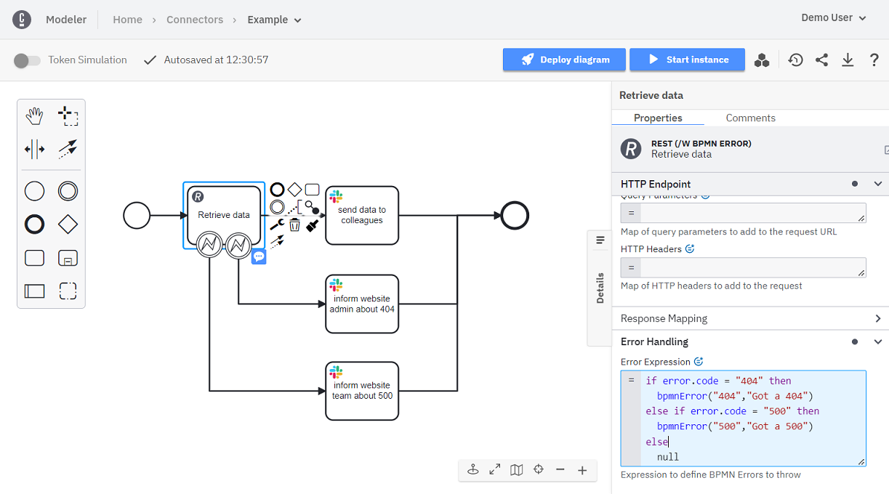

Using Connectors
Any task can be transformed into a Connector task. This guide details the basic functionality all Connectors share.
Find the available Connectors in Camunda 8 SaaS and how to use them in detail in the out-of-the-box Connectors documentation. Additionally, learn how you can visit the Camunda Marketplace to add Connectors from your BPMN diagram.
New to modeling with Camunda? The steps below assume some experience with Camunda modeling tools. Model your first diagram to learn how to work with Web Modeler.
Using secrets
secrets.* is a deprecated syntax. Instead, use {{secrets.*}}
You can use sensitive information in your Connectors without exposing it in your BPMN processes by referencing secrets. Use the Console component to create and manage secrets.
You can reference a secret like MY_API_KEY with {{secrets.MY_API_KEY}} in any Connector field in the properties panel that supports this.
Each of the out-of-the-box Connectors details which fields support secrets.
Secrets are not variables and must be wrapped in double quotes as follows when used in a FEEL expression:
= { myHeader: "{{secrets.MY_API_KEY}}"}
Using the secrets placeholder syntax, you can use secrets in any part of a text, like in the following FEEL expression:
= "https://" + baseUrl + "/{{secrets.TENANT_ID}}/accounting"
This example assumes there is a process variable baseUrl and a configured secret TENANT_ID.
The engine will resolve the baseUrl variable and pass on the secrets placeholder to the Connector. Assuming the baseUrl variable resolves to my.company.domain,
the Connector receives the input "https://my.company.domain/{{secrets.TENANT_ID}}/accounting". The Connector then replaces the secrets placeholder upon execution.
For further details on how secrets are implemented in Connectors, consult our Connector SDK documentation.
secrets.* is a reserved syntax. Don't use this for other purposes than referencing your secrets in Connector fields.
Using this in other areas can lead to unexpected results and incidents.
Variable/response mapping
When a Connector is expected to return a result, Connectors feature a dedicated section known as Response Mapping,
comprising two essential fields: Result Variable and Result Expression.
These fields export responses from external Connector calls into process variables.
Result variable
This field declares a singular process variable designated for the export of responses from a Connector call. The resulting process variable can be subsequently utilized within the ongoing process.
Result expression
This field facilitates the mapping of a Connector response into multiple process variables, providing further flexibility of the variable utilization within the ongoing process. Additionally, the extracted values can be transformed with FEEL expressions.
To ensure process isolation, note that Connectors do not have access to process instance variables.
While using this field, a process variable with the name response is reserved.
Activation
The Activation section pertains specifically to inbound Connectors.
Correlation key (process)
This field is instrumental in specifying which variable within a Connector should function as the process correlation key. Learn more about message correlation.
Correlation key (payload)
This field guides the Connector on how to extract a correlation value from the incoming message payload.
Message ID expression
This field extracts a unique message identifier from the incoming message payload. Messages sharing the same identifier within a defined TTL (Time To Live) will be correlated at most once. Leaving this field empty may result in identical messages being submitted and processed multiple times.
Condition
Utilized for validating conditions against the incoming message payload, this field enables the filtering of payloads that can initiate a process. Leaving this field empty results in all incoming messages triggering a new process, except those failing pre-validation checks, such as HMAC signature verification for specific Connectors.
Example
Imagine your Connector makes an external call to an arbitrary weather service. The weather service returns the following response:
{
"status": 200,
"headers": {
"date": "Thu, 19 Jan 2023 14:02:29 GMT",
"transfer-encoding": "chunked",
"content-type": "application/json; charset=utf-8",
"connection": "keep-alive"
},
"body": {
"latitude": 52.52,
"longitude": 13.4,
"generationtime_ms": 0.22804737091064453,
"utc_offset_seconds": 0,
"timezone": "GMT",
"timezone_abbreviation": "GMT",
"elevation": 45.0,
"current_weather": {
"temperature": 1.0,
"windspeed": 10.1,
"winddirection": 186.0,
"weathercode": 2,
"time": "2023-01-19T14:00"
}
}
}
If you declare a variable myWeatherResponse in the Result Variable field, the entire response is mapped to the declared variable.
Now, let's imagine that you wish to extract only temperature into a process variable berlinWeather and wind speed into berlinWindSpeed. Let's also imagine you need weather in Fahrenheit declared in berlinWeatherInFahrenheit.
In that case, you could declare Result Expression as follows:
= {
berlinWeather: response.body.current_weather.temperature,
berlinWindSpeed: response.body.current_weather.windspeed,
berlinWeatherInFahrenheit: response.body.current_weather.temperature * 1.8 + 32
}
BPMN errors and failing jobs
Being able to deal with exceptional cases is a common requirement for business process models. Read more about our general best practices around this topic in dealing with exceptions.
Connectors share this requirement for exception handling like any other task in a model. However, Connectors define reusable runtime behavior that is not aware of your specific business use case. Thus, they can not determine if an exceptional case is a technical or business error. Therefore, a Connector's runtime behavior cannot throw BPMN errors, but only technical errors. However, those technical errors can optionally contain an error code as structured data that can be reused when configuring a Connector task.
There may be situations where technical errors cannot be detected by the runtime and they must be thrown explicitly.
Error expression
To support flexible exception handling, the out-of-the-box Connectors allow users to define an Error Expression in the Error Handling section at the bottom of the properties panel.
The example below uses this property to automatically inform the right group of people depending on the result of an HTTP request against an internal website. If the website returns a valid result, this data is passed on to the regular team. In case of a 404 website response, the administrator is informed, so they can check why the website cannot be reached. HTTP responses with status 500 indicate internal website errors, which is why the website team is informed.

The Error Expression property requires a FEEL expression that yields a BPMN error object in the end. The BPMN error object can be an empty context,
null, or a context containing at least a non-empty errorType and a non-empty code if the error type is bpmnError. You can use all available functionality provided by FEEL to produce this result.
Use the provided FEEL functions:
bpmnErrorto create a BPMN error object. This triggers a ThrowError call to the workflow engine.jobErrorto create a fail job object. This triggers a FailJob call to the workflow engine.
The bpmnError FEEL function optionally allows you to pass variables as the third parameter. You can combine this with a boundary event to use the variables in condition expressions when handling the error event. Example FEEL expression:
if response.body.status = "failed" then bpmnError("FAILED", "The action failed", response.body) else null
Within the FEEL expression, you access the following temporary variables:
- The result of the Connector in
response. - The job of the invocation in
jobwith the fields:retries - Any result variables created by the Result Variable and Result Expression properties (see the REST Connector, for example).
- The technical exception that potentially occurred in
error, containing amessageand optionally acode. The code is only available if the Connector's runtime behavior provided a code in the exception it threw.
Building on that, you can cover those use cases with BPMN errors that you consider as exceptional. This can build on technical exceptions thrown by a Connector as well as regular results returned by the external system you integrated. The example expressions below can serve as templates for such scenarios.
Function bpmnError()
Returns a context entry with an errorType, code and message.
- parameters:
code: stringmessage: string
- result: context
bpmnError("123", "error received")
// { errorType: "bpmnError", code: "123", message: "error received" }
Function bpmnError() with variables
Returns a context entry with an errorType, code, message, and variables.
- Parameters:
code: stringmessage: stringvariables: context
- Result: context
bpmnError("123", "error received", {myVar: myValue})
// { errorType: "bpmnError", code: "123", message: "error received", variables: {myVar: myValue}}
Function jobError()
Returns a context entry with an errorType, message, variables, retries, and timeout.
- Parameters:
message: stringvariables: context (optional), default{}retries: number (optional), default0timeout: days-time-duration (optional), defaultPT0S
- Result: context
Optional parameters can be omitted if no parameter needs to be set after.
jobError("job failed", {myVar: myValue}, 2, @"PT30S")
// { errorType: "jobError", message: "job failed", variables: {myVar: myValue}, retries: 2, timeout: @"PT30S" }
jobError("job failed", {myVar: myValue}, 2)
// { errorType: "jobError", message: "job failed", variables: {myVar: myValue}, retries: 2, timeout: @"PT0S" }
jobError("job failed", {myVar: myValue})
// { errorType: "jobError", message: "job failed", variables: {myVar: myValue}, retries: 0, timeout: @"PT0S" }
jobError("job failed")
// { errorType: "jobError", message: "job failed", variables: {}, retries: 0, timeout: @"PT0S" }
BPMN error examples
HTTP errors to BPMN errors
Using the REST Connector, you can handle HTTP errors directly in your business process model by setting a header named errorExpression with the following value:
if error.code = "404" then
bpmnError("404", "Got a 404")
else if error.code = "500" then
bpmnError("500", "Got a 500")
else if response.body.status = "failed" then
bpmnError("FAILED", "Action failed", response.body)
else
null
This will create BPMN errors for HTTP requests that return with a status 404 or 500. You can extend that list to all HTTP errors you can handle as business use cases, for example by informing a website administrator directly via Slack using the Slack Connector.
Response value to BPMN error
Using the REST Connector or any other Connector that returns a result, you can handle a response as a BPMN error based on its value, by setting a header named errorExpression with the following value:
if response.body.main.humidity < 0 then
bpmnError("HUMIDITY-FAIL", "Received invalid humidity")
else null
This is assuming you requested data from a local weather station and received a value that is technically valid for the REST Connector.
However, you could define that for your business case a humidity value below 0 must be an error that should be checked manually.
You could automatically send a message to a technician to check the weather station.
Generic Header to transform a ConnectorException to a BPMN Error
If the Connector throws a ConnectorException like:
throw new ConnectorException("HUMIDITY-FAIL", "Received invalid humidity");
Then you can transform this exception to a BPMN error with this expression in a Header item named errorExpression:
if is defined(error) then bpmnError(error.code, error.message) else null
Fail job examples
HTTP errors to fail job
Using the REST Connector, you can handle HTTP errors directly in your business process model by setting a header named errorExpression with the following value:
if error.code = "404" then
jobError("Resource not found")
else if error.code = "504" then
jobError("Gateway timeout", {},job.retries - 1, @"PT30S")
else if response.body.status = "technicalProblem" then
jobError("Technical Problem", response.body)
else
null
This will allow you to control the job failure for HTTP requests that return with status 404 or 504. You can extend that list to all HTTP errors you can handle as a custom fail job; for example, to go to 0 retries instantly or increase the retry timeout.